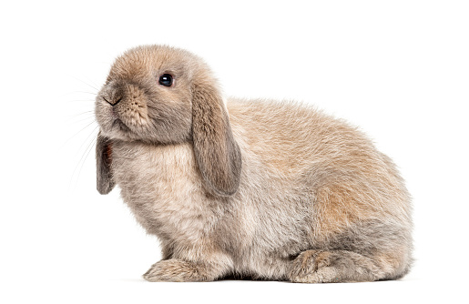

Królik baranek (mini lop) to najbardziej znana rasa w Polsce. Baranki są urocze, mają przyjacielski charakter i
nie wymagają skomplikowanych zabiegów pielęgnacyjnych, dlatego są często wybierane jako pierwszy królik lub pierwszy zwierzak.
Królik baranek ma masywny, zwarty korpus. Jego ciało jest mocno umięśnione, zwarte i zrównoważone. Głowa baranka jest mocna i ściśle osadzona na ramionach.
Najbardziej charakterystyczną częścią ciała królika baranka są uszy. Według wzorca rasy powinny być osadzone na czubku głowy i spadać pionowo po obu stronach głowy. Uszy powinny zwisać blisko policzków. Ich wielkość powinna być proporcjonalna do głowy i ciała.
Nogi baranka powinny być krótkie i proste, o grubej kości.
Futro królika baranka jest zazwyczaj średniej długości, grube i gęste. Dopuszczalne umaszczenia to:
Szary
Czarny
Biały
Niebieski
Rudy
Hawana
Madagaskarowy
Szynszylowaty
Żółty
Srokacz
Pielęgnacja
Królik baranek nie wymaga skomplikowanej pielęgnacji. Poleca się czesanie go raz w tygodniu lub używanie furminatora. Baranki najczęściej występują w odmianach krótkowłosych,
w przypadku których czesanie ma przede wszystkim usunąć martwe włosy i zminimalizować linienie.
Na szczególną uwagę zasługują charakterystyczne uszy baranka. Duże i charakterystycznie oklapnięte – choć niesłychanie urocze,
wymagają codziennego przeglądu. Ich budowa utrudnia dostęp powietrza do kanału słuchowego, dlatego zmiana koloru, zapachu,
czy wydzieliny wewnątrz ucha to powód, by udać się do weterynarza. Niewskazane jest natomiast samodzielne czyszczenie uszu.
Kontrolować należy także zęby królika. Ich stan jest zależny głównie od diety, dlatego, jeżeli zauważysz ich przerost,
wprowadź do diety pupila więcej sianka, zabawek do gryzienia i skonsultuj się z weterynarzem, by potwierdzić, że takie podstawowe działania będą
wystarczające.
Królika nie należy kąpać. Zazwyczaj same dbają one o swoje futerko. Wyjątkiem są kąpiele zalecone przez weterynarza,
w wypadku choroby dermatologicznej. Jeżeli jest to konieczne, ubrudzone futerko można wyczyścić miejscowo.